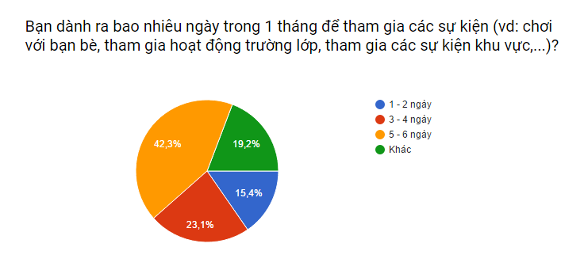
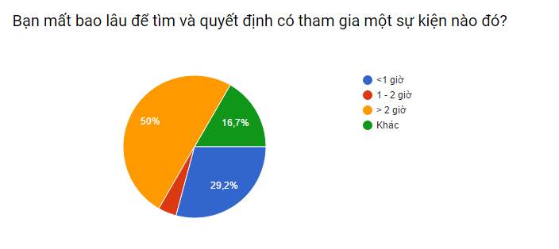

GIỚI THIỆU CHUNG
Trong tình hình hội nhập quốc tế, thanh niên Việt Nam đang dần hòa nhập với quá trình hội nhập hóa. Nhu cầu tham gia sự kiện giải trí và học tập của thanh niên ngày càng lớn, nhưng trong một cuộc khảo sát gần đây của chúng tôi, đa số thanh niên vẫn chưa biết tìm kiếm thông tin về các sự kiện một các hiệu quả. Đa số mọi người còn tốn khá nhiều thời gian vào việc quyết định tham gia các hoạt động ngoài trời, gặp khó khăn trong việc tìm kiếm thông tin về các hoạt động .
 